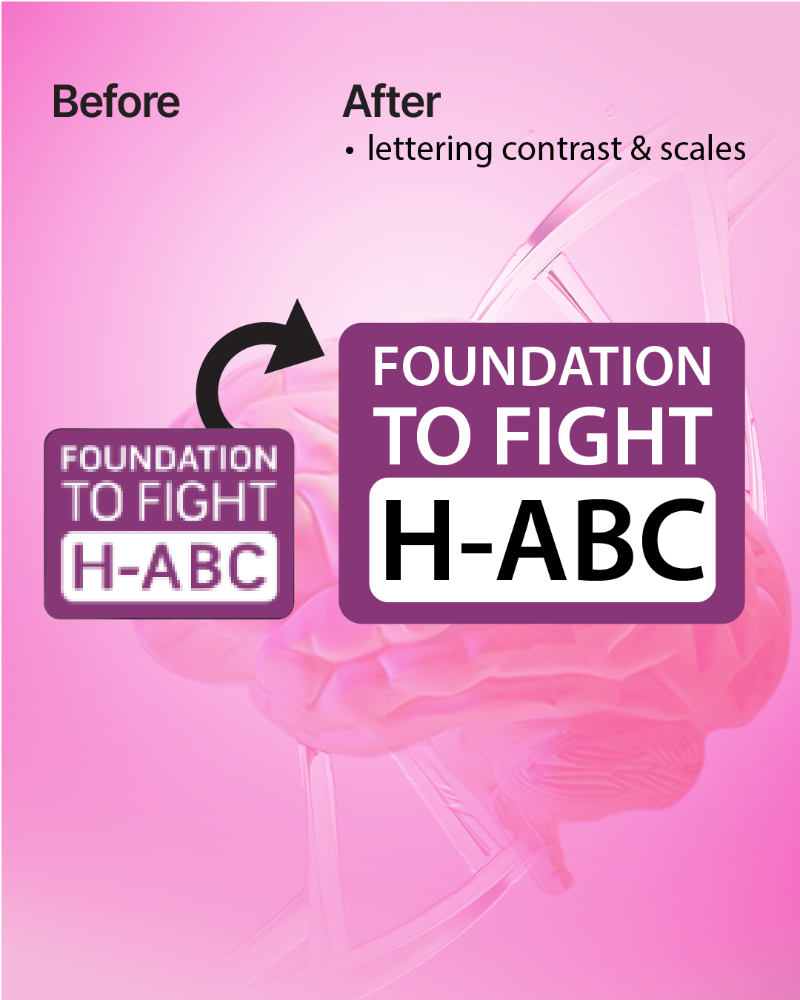
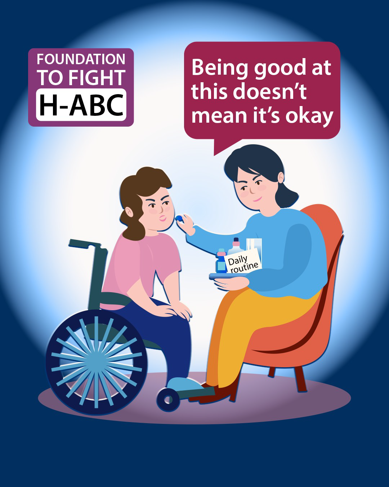
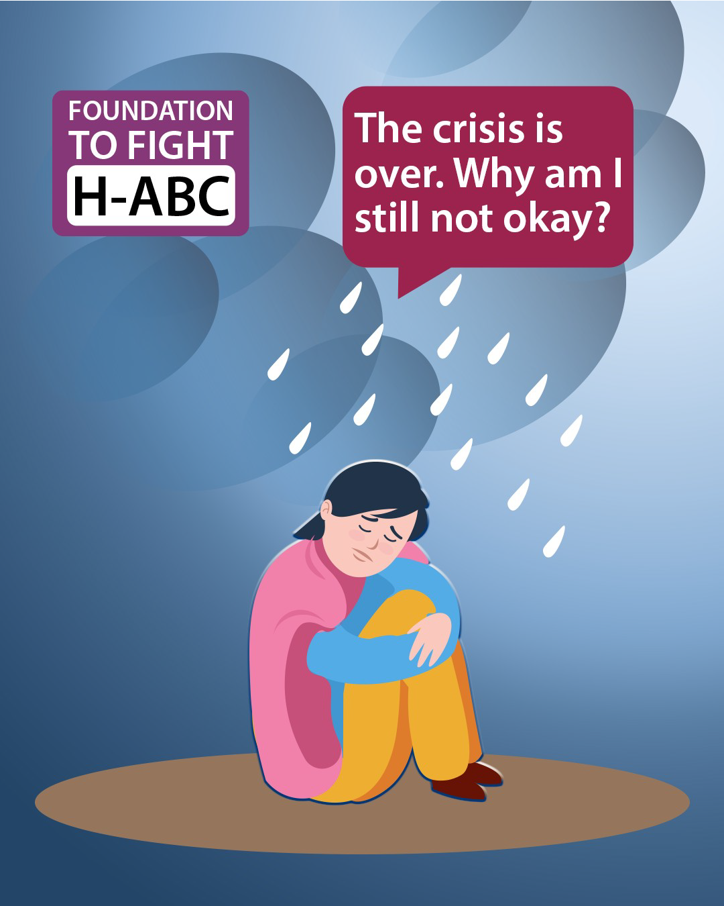
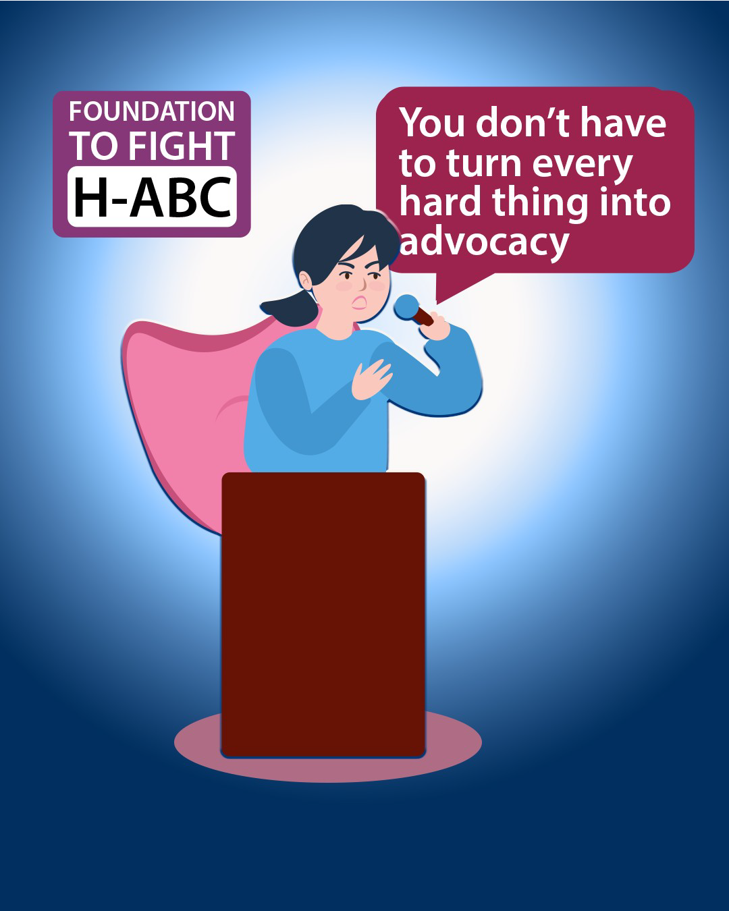
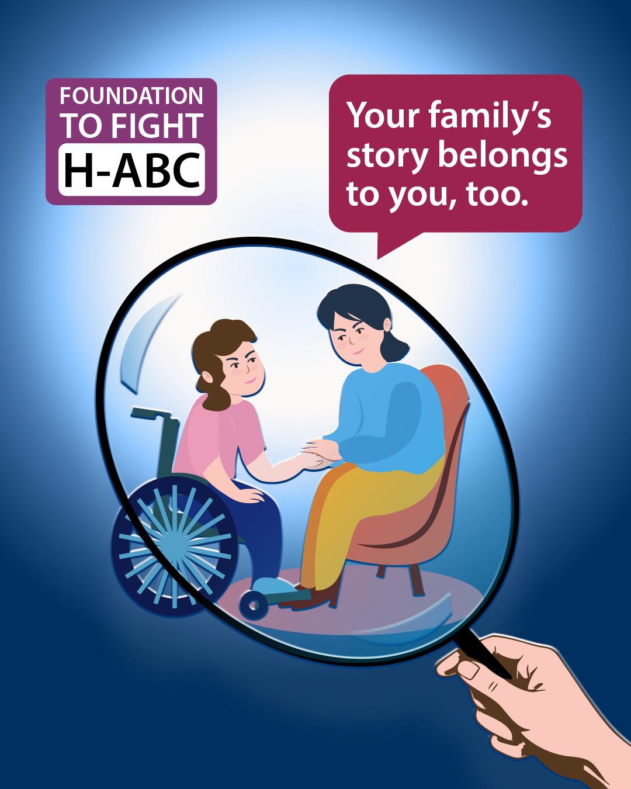
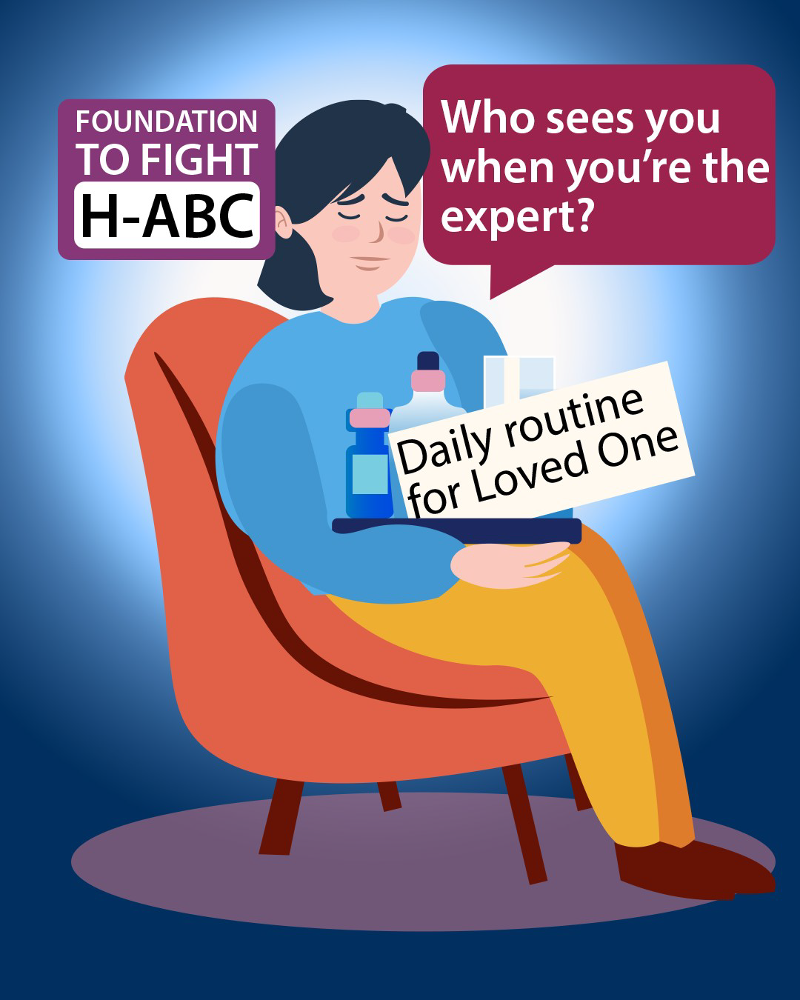
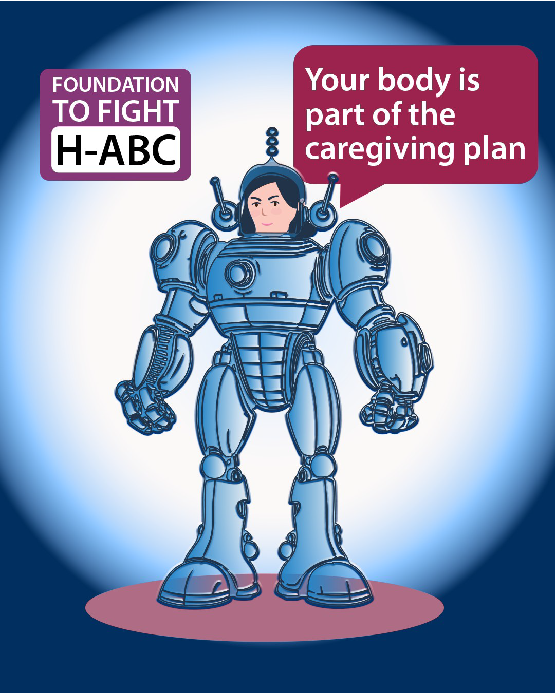
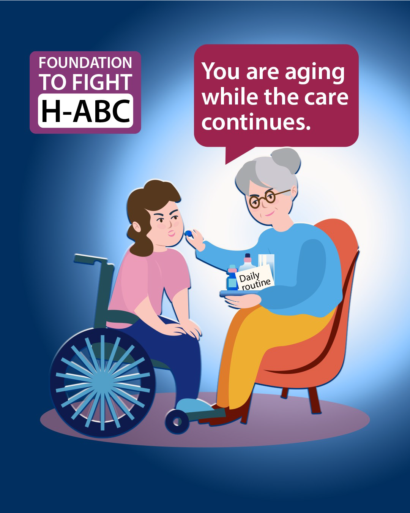

01 / Project Overview & Brand Refinement
Slides 01 – 02
02 / Caregiving Realities Series
Slides 03 – 10A practical, rarely discussed question: who knows the routines, medications, equipment, and emergency steps if the caregiver is suddenly unavailable?

A caregiver can become highly skilled through necessity. Praise for being “so strong” can hide how much support they still need.

The body and mind can stay on alert after a medical scare or difficult stretch has passed. Recovery may take longer than the event itself.

Caregivers are often expected to educate, explain, correct, and push for change. It’s okay to choose when to speak up and when to conserve your energy.

Sharing can build awareness and community, but caregivers can also decide what stays private—including parts of their own experience.

Caregivers may know more about their loved one’s day-to-day needs than anyone else in the room, yet have few people who ask how they are doing without needing an update.

The physical work—transfers, equipment, disrupted sleep, staying ready—can wear on a caregiver over time. Caring for your body is part of making care sustainable.

The caregiver’s health, stamina, and circumstances change too. Planning for that reality is not giving up; it’s recognizing that both people need care.